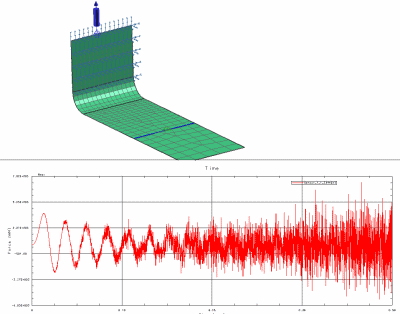
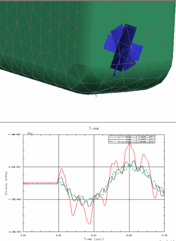

传感器是在模型上定义、要在该处查看响应函数结果的节点位置。您可以使用一个或多个传感器来模仿实际测试。例如，传感器可以表示加速计的位置。或者，您的部件的某个特定位置处可能具有某些规定，如加速度限制。使用传感器，可以捕获该位置处的响应结果。
传感器可用来捕获下列类型的响应：位移、速度、加速度和反作用力。您在传感器定义中选择的每个节点都会生成一个响应函数。
存储传感器时所使用的名称反映了节点以及在其中评估传感器的方向。例如，Sensor_1_2_(99X+)_1 表示 Sensor_1 在正 X 方向中节点 99 处的函数 2 结果。
|

|
使用应变片指定模型上的节点或单元位置，以便在该位置的指定方向上评估应力或应变结果。应变片定义：
位置
应力或应变结果的坐标系
应力或应变结果的分量
在定义应变片后，可创建分析事件，然后对模型上的选定应变片执行评估。评估应变片命令可为选定数据分量(例如，XX、YY、XY、Von Mises 或应变片的分支)生成应力或应变结果。
|

|